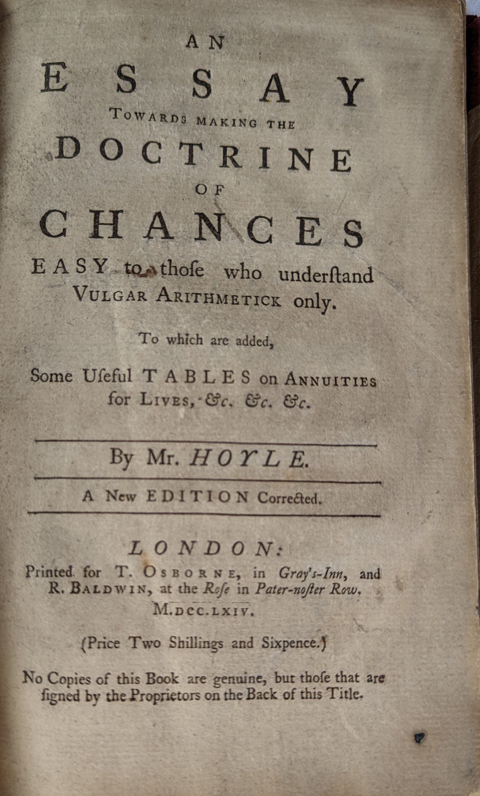

A Descriptive Bibliography of Edmond Hoyle
Copyright © 2014-26 by David Levy
(page updated 2026-01-23)User Guide
Chances.2
The Doctrine of Chances, printed for T. Osborne et al, second London edition, “a new edition, corrected”, 1764.
 |
Title: | AN | ESSAY | Towards making the | DOCTRINE | OF | CHANCES | EASY to thoſe who underſtand | Vulgar Arithmetick only. | To which are added, | Some Uſeful TABLES on Annuities | for Lives, &c &c. &c. | [rule] | By Mr. HOYLE. | [rule] | A New EDITION Corrected. | [rule] | LONDON: | Printed for T. Osborne, in Gray's-Inn, and | R. Baldwin, at the Roſe in Pater-noſter Row. | M.dcc.lxiv. | (Price Two Shillings and Sixpence.) | No Copies of this Book are genuine, but thoſe that are | ſigned by the Proprietors on the Back of this Title. |
| Collation: | 8o: A–I4 K4(K4+1) [$½ signed]; 41 leaves, pp. [i–iii] iv–viii, [1] 2–73 [74] |
| Contents: | Signature (Page) Reference | Contents | Signature (Page) Reference | Running Titles |
| A1r (i) | title | |||
| A1v (ii) | autographs of Tho. Osborne and R. Baldwin | |||
| A2r–A2v (iii–iv) | ‘[headpiece Maslen R046 with R332 inset] | TO THE | RIGHT HONOURABLE | THE | EARL of EGMONT. | [...]’ | A2v (iv) | ‘DEDICATION.’ | |
| A3r–A4v (v–viii) | ‘[headpiece Maslen R039] | THE | PREFACE. | [...]’ | A3v–A4v (vi–viii) | ‘The PREFACE.’ | |
| B1r–K4+1r (1–73) | ‘[headpiece Maslen R055] | AN | ESSAY | ON THE | Doctrine of Chances, &c. | […]’ | B1v–K4+1r (2–73) | ‘An Essay on the | Doctrine of Chances.’ | |
| K4+1v (74) | blank |
| Catchwords: | D1r(17) Firſt, [Firſt] |
| Press Figures: | B4v(o):6; D4v(o):3; E2v(o):6; G4v(o):5; K4v(o):3 |
| Publisher: | Thomas Osborne, Richard Baldwin |
| Printer: | William Richardson (ornaments), Samuel Clark (ornaments) |
| Notices: | 1764-06-07 St. James Chronicle: "This day was published, price 2s. 6d. sewed, a new edition,
corrected...☞No copies of this book are genuine, but those that are signed
by the proprietors on the back of the title." Advertised with Games.4 and Chess.1. 1769-12-26 Gazetteer and New Daily Advertiser: price 2s. |
| Price: | 2s.6d. (title, advertisement), 2s. (advertisement) |
| References: | ESTC T87536, Horr 671 (incorrectly dated 1761, Jessel 796, Marshall s7 no.8 p405 (1889-11-23), Rather 48 |
| Copies Seen: | L [8505.b.39] (ECCO); O [50b.9] (Google); O [Jessel e.648]; NvLN [QA273.H87 1764] (lacking gathering F); TNJ [GV1302.H8]; Levy [1663]; Levy [1831] |
| Other Copies: | Eu [D.S.h.10.19/2]; MRc [4C1-52(1)]; O [Rigaud e.420(2)]; LEI [645 B 21: 1]; CtY-BR [QA273.H68 1764]; GAT [QA273.H87 1764]; LU [QA273.H87 1764]; MdBJ [QA273.H7 1764] |
| Notes: | At the Osborne trade sale of 1767-07-28, 200 copies went unsold. |